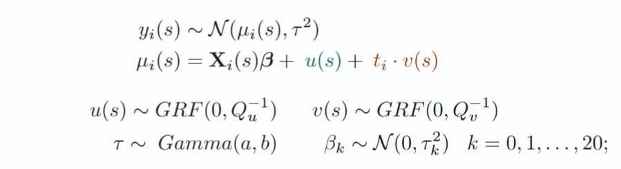
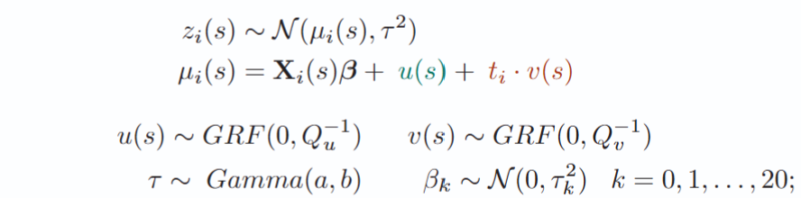

A) Bayesian Spatially Varying Coefficient (SVC) Model for LST

B) Bayesian SVC Model for SUHI

where
- \( y_i(s) \) = LST at day \( i \) and pixel \( s \)
- \( z_i(s) \) = SUHI at day \( i \) and pixel \( s \)
- \( \mathbf{X}_i(s)\boldsymbol{\beta} \) = linear predictor for day \( i \) and pixel \( s \)
- \( u(s) \) = spatially varying intercept (residual spatial effect)
- \( t_i \cdot v(s) \) = spatially varying linear effect of time (long-term
summer linear trend)
-
➔
Spatially varying intercept and
spatially varying linear effect of time
modelled as latent Gaussian random fields using the SPDE
(Stochastic Partial Differential Equation) approach
-
➔
Posterior excursion sets at 95% probability for
\( t_i \cdot v(s) > 0 \) and
\( t_i \cdot v(s) < 0 \) to identify warming and cooling regions
-
➔
Inference performed with INLA